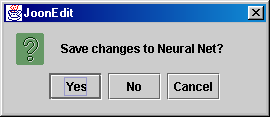

Projects built with the Joone editor can be saved and reopened at a
later date. Projects are saved as serialized files with the file
extension of ‘ser’. Only one project can be edited at a time. Joone
will prompt to save an edited project prior to closing, or opening a
new project.
Creates a new Joone project. Any existing project changes are lost.
Opens an existing Joone project. This will replace any existing project.
Allows the current Joone project to be saved as a serializable file.
Allows a Joone project to be saved as a serializable file with a different name or path.
Allows the exporting of a neural net in a serialized form (.snet). The neural network is saved without the graphic components. Useful for the use into a custom Java application (or for other future uses).
Prints a graphical representation of the current project.
Exits the Joone editor.